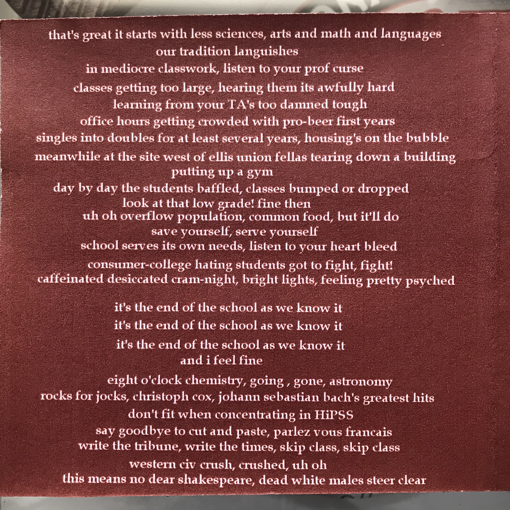
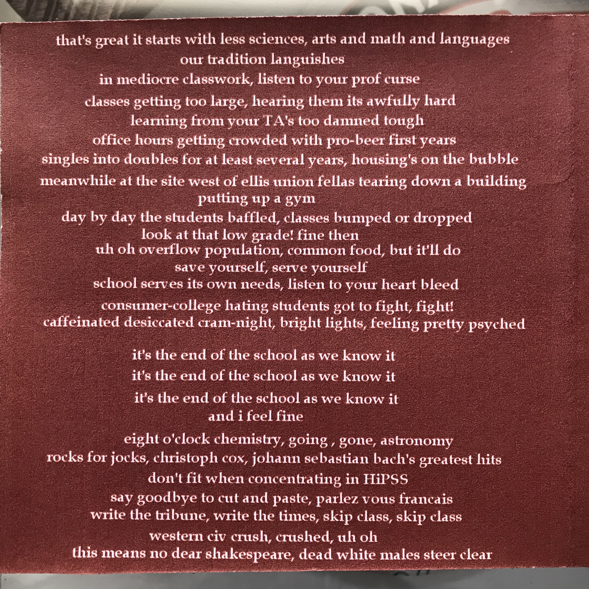

The End of the World as We Know It...
or so we thought 😜
An audio memento of the 1999 University of Chicago "Fun-In"
Since I've been in self-isolation (or whatever this is) for over a month now, I thought it would be distracting, if not fun, to look back at a ye olde global crisis, the end of the last millenium, a.k.a., Y2K. Back in 1999, everyone thought the world was coming to an end. The space-time continuum was in peril when, come January 1, 2000, our computers the world over were going to think it was the year 00. Even more catastrophic, The University of Chicago was reducing its infamous Common Core from 21 courses to 18. Students were outraged at the administration for trying to make the U of C "fun". In protest we held a "Fun-In" that involved gathering on the quad and distributing an inexplicably large number of rubber duckies. Honestly, I don't really remember exactly what happened, but there were lots of rubber duckies. I'm sure there were also impassioned speeches and probably free food. And, as with all righteous acts of civil disobedience, there was protest music.
M.P.R. Story and P.W. Kauffman, two of the 5 (or 6?) "Thompson House Boys The Thompson House Boys were a group of boys who lived in Pierce Hall's Thompson House (7th & 8th floors) from the fall of 1996 to the spring of 2000. Wisely, there were no women from the fall of 1996 who decided to stay put for all for years. I was, of course, a Thompson House Boy. ", wrote parody lyrics to R.E.M.'s It's The End Of The World As We Know It (And I Feel Fine). They recorded their version, It's The End Of The Core As We Know It (And I Feel Fine), under their own record label, Thought Crime Records As far as I know, Thought Crime Records only produced this one song.. Guided by the principles of supply side economics I don't really know what supply side economics are; I never bothered to take an economics class. Nevertheless, it might apply here. Milton Friedman, Chicago School, blah, blah, blah., they sold CDs of the single for $5 each at the Fun-In.
I found my CD of It's The End Of The Core As We Know It (And I Feel Fine) while unpacking from a recent move across the country. I have no idea why I have kept this CD for so long. I've moved across the country six times since I graduated from the U of C, and this is literally the only CD I still own. After 21 years of obscurity, I've posted the song here along with all of the album artwork, including lyrics, for your enjoyment. Getting this song to the internet was no easy task. I don't own any piece of electronics that will read a CD. Fortunately, I was able to cobble together an old Windows CPU (complete with CD drive), monitor, and all the obsolete cables from various nooks, crannies, and storage closets at work. The audio file is in .WAV format, which I don't think is used much anymore. It plays fine for me in my browser. Hopefully it works for you too. Enjoy!
I was not involved in the writing or recording of the song. However, as a Thompson House Boy I was friends with M.P.R.S. and P.W.K. and I did give feedback during many, many, many, many rehearsals. Regrettably, I never asked the musicians to sign my CD.
Listen Here 📀 🔈
 



The changes to The Core were such a big deal that the Chicago Tribute even covered the event (😉). Link to Story
My UofC Class of 2000 Pic Book photo, which was taken in the fall of 1995.